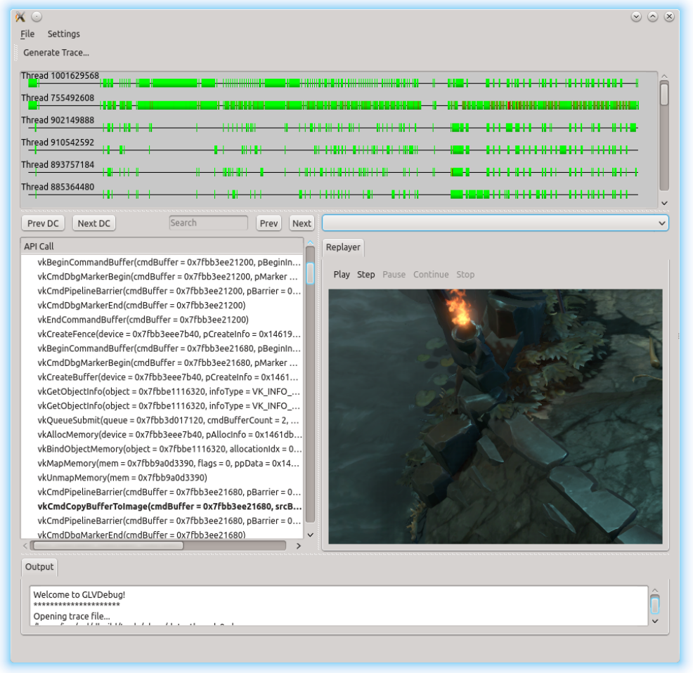

Overview
Vulkan is a new open standard API by Khronos that offers low-level control of GPUs for graphics and general purpose computation. It has been designed from the ground up around the capabilities of modern hardware.-
Direct GPU control with minimal driver overhead
For example, data is written directly to GPU memory instead of using calls equivalent to glUniform. Applications can implement their own memory allocation strategies. (Source)
Another feature is the render pass, which offers control over loading of render targets at the start and end of renders, which is very useful for tiling architectures.
-
Multi-threading friendly architecture
Multiple threads can create and populate command buffers at the same time, which can then be submitted to the GPU by a separate thread.
-
Unified API for desktop, mobile and embedded platforms
There is no equivalent of OpenGL ES, Vulkan offers the same API on all platforms.
-
Intermediate bytecode for shaders
The driver accepts shaders in the SPIR-V bytecode format. Khronos will supply a separate compiler for GLSL that targets this intermediate format. Third-party developers will be able to write their own compilers for other languages.
API
Not much is known about the API yet, but the blog post linked above offers some insight. API calls have thevk prefix and
functions take the state that they will change as their first
parameter.
vkCmdBindDescriptorSet(cmdBuffer, VK_PIPELINE_BIND_POINT_GRAPHICS, textureDescriptorSet[0], 0);
vkQueueSubmit(graphicsQueue, 1, &cmdBuffer, 0, 0, fence);
vkMapMemory(staticUniformBufferMemory, 0, (void **)&data);
// ...
vkUnmapMemory(staticUniformBufferMemory);
All hardware that supports OpenGL ES 3.1 or later can also support
Vulkan.
Tools
Valve, LunarG, Codeplay and other parties are already developing tools. Displayed below is a screenshot of the Vulkan debugger being developed by Valve and LunarG.
Khronos has announced that these utilities will be available at the same time as the first drivers. (Source)Demo
Imagination Technologies has developed a proof-of-concept driver for Vulkan for their PowerVR GPUs. They have ported an OpenGL ES 3.0 demo to Vulkan.